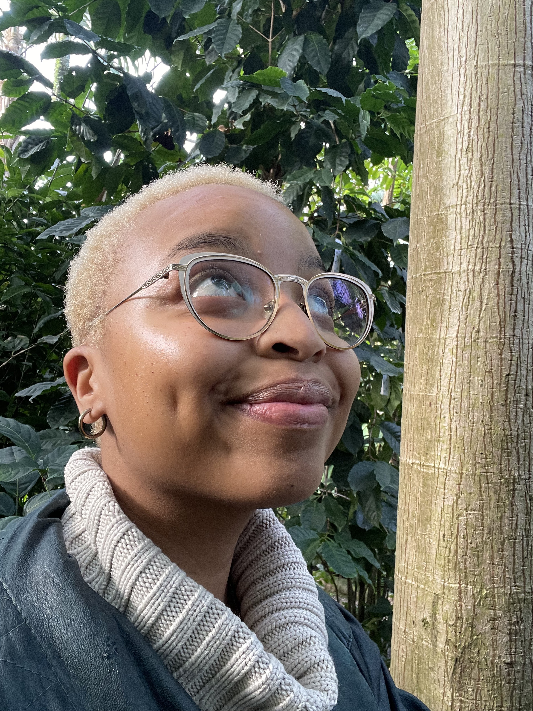

Oasis Facilitator
singer · songwriter · sound healer
“Sound has always been my first language.”

A multi-instrumentalist, classically trained pianist and self-taught guitarist — under the artist name Tembeh, she is a singer-songwriter and producer known for her angelic voice and atmospheric musical worlds. Winner of the POP-Büro Award 2024, she has spent years crafting sound that moves something deep within you.
Now she is embarking on a new path — creating sonic experiences that bridge music and healing. A dedicated yoga and meditation practitioner, Thembe brings the same depth of presence to guiding you on a meditative journey. Through singing bowls and her voice, she holds space for you to soften, to listen inward, and to rest in vibration. Every session is a group journey into stillness.
When she's not making music, you'll find her in nature, making art, or dreaming up new ways to gather. At the heart of everything she does is a mission to build community centred around authentic love and profound connection.